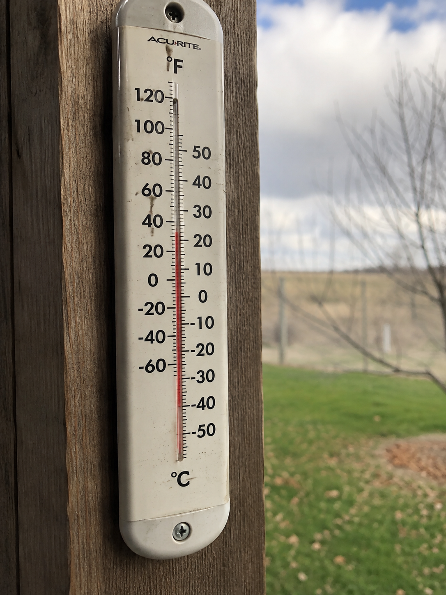
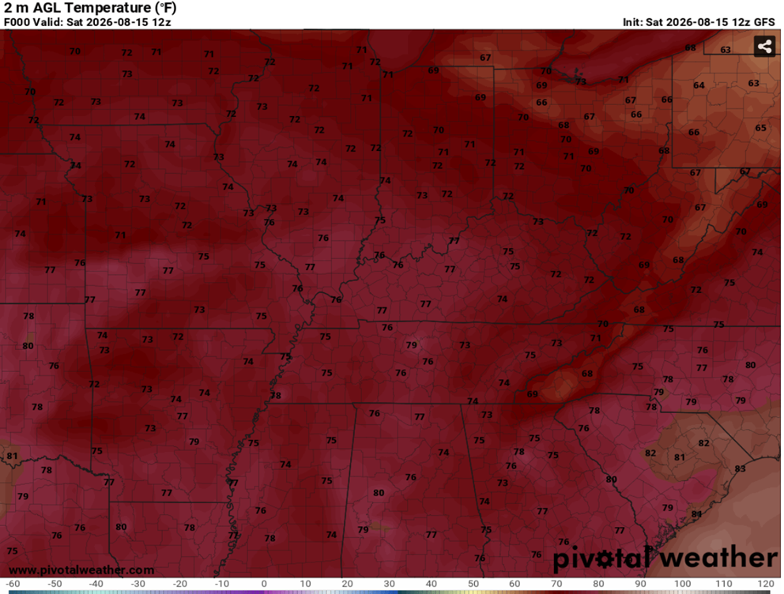

Temperatures
An overview of how meteorologists forecast high and low temperatures.

Using Models to Forecast Temperatures?
Weather models can provide a baseline for forecasting temperatures. Models such as the GFS, ECMWF, HRRR, and other regional models forecast temperature at different times of the day and at multiple levels in the atmosphere. When forecasting surface temperatures, meteorologists generally examine the 2m temperature , which represents the temperature approximately 2 meters (6.5 feet) above the ground. This value is commonly used as an estimate of the air temperature near the surface and is the basis for many standard forecasts.

How Meteorologists Forecast Temperatures
Placeholder content — this section will cover how model data, historical trends, and local conditions are combined to produce a temperature forecast.
Factors That Cause Temperature Variability
Placeholder content — this section will discuss elevation, urban heat islands, cloud cover, wind, and other factors that cause temperatures to vary across short distances.